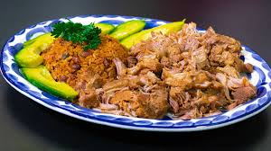
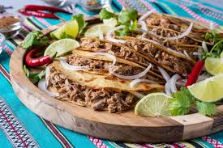
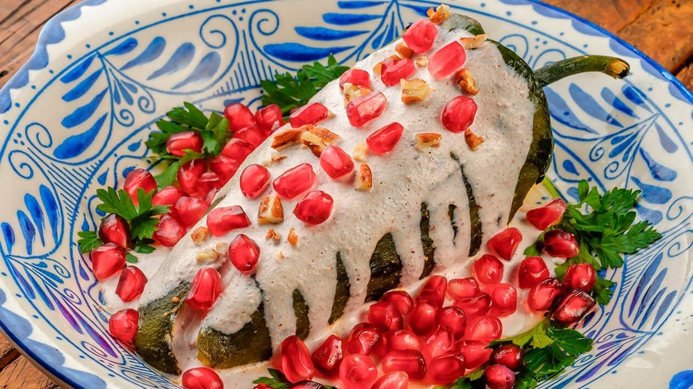

SAT
Send your recipe
Seasoning, Aroma and Tradition
Our best recipes
Tacos
Total: Aproximately 40 minutes.
Preparation: 10minutes
Cooking: 30 minutes
Pozole
Total: Aproximately 40 minutes
Preparation: 30 minutes
Cooking: 10 minutes

Carnitas
Total: Aproximately 1 hour
Preparation: 10 minutes
Cooking: 50 minutes
Tlayuda
Total: Aproximately 30 minutes
Preparation: 30 minutes
Repose: 2 hours

Barbacoa
Total: Aproximately 1 hour
Preparation: 40 minutes
Cooking: 20 minutes

Chiles Nogada
Total: Aproximately 1 hour
Preparation: 30 minutes
Cooking: 30 minutes